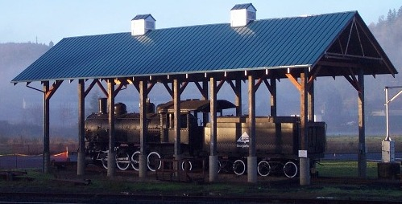

Last updated: 24 June, 2015
| Builder: | Baldwin |
| Build #: | 55347 |
| Date: | 1922 |
| Engine #: | 1 (6) |
| Railroad: | Georgia-Pacific (GP) |
| Website: | www.yaquinapacificrr.org |
| Email: | yprhs@peak.org |
| Location 1: | Yaquina Pacific Railroad Historical Society 100 NW A St, Toledo, OR 97391 |
| GPS: | 44.620346, -123.938512 |
| Phone: | 541-336-5256 |
| Status: | Display |
| Notes: |
This Baldwin 2-8-2 of 1922 was built for the Manary Logging Co. as #1 and spent its entire working life in and around Toledo. It was later sold to the C.D. Johnson Lumber Corp, and later to Georgia-Pacific in 1953. Retired in 1960, #1 was placed on display in Toledo. In 1982, Toledo donated #1 to the Western Forest Industries Museum (Mt. Rainier Scenic Railroad), but it was never moved from Toledo and ownership was later returned to the city. Today, the locomotive is owned by the Yaquina Pacific Railroad Historical Society of Toledo, who are currently in the process of restoring the locomotive.
| Class: | |
| Gauge: | 4'-8½" |
| F.M.Whyte: | 2-8-2 |
| Drivers: | |
| Gear Ratio: | |
| Tractive Effort: | |
| Weight: | |
| Weight on Drivers: | |
| Length: | |
| Boiler: | |
| Cylinders: | |
| Top Speed: | |
| Fuel: | |
| Fuel Type: | |
| Water: | |
| Steam psi: |